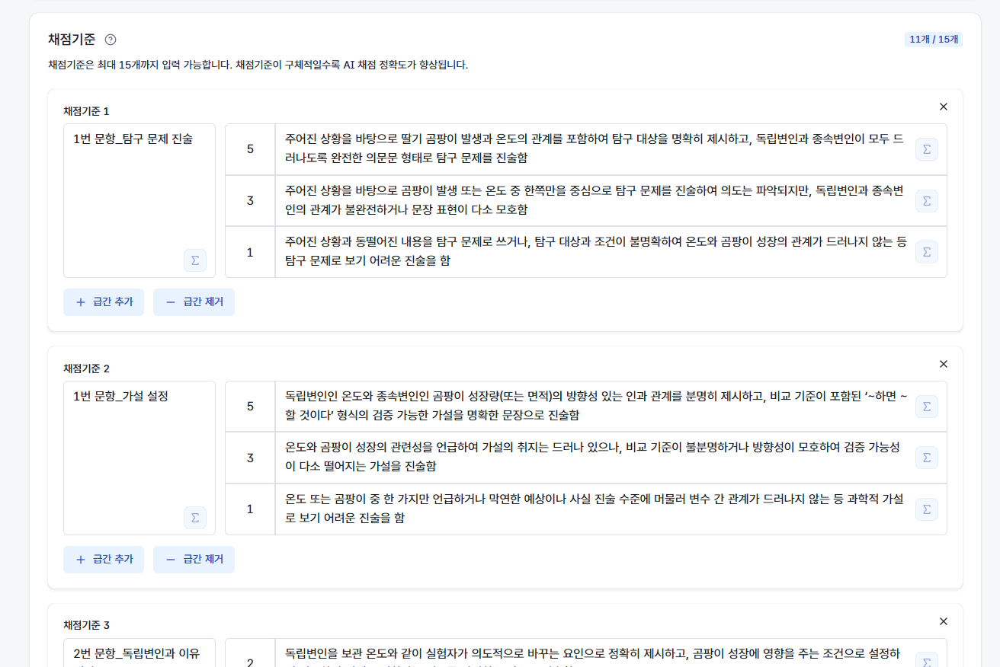
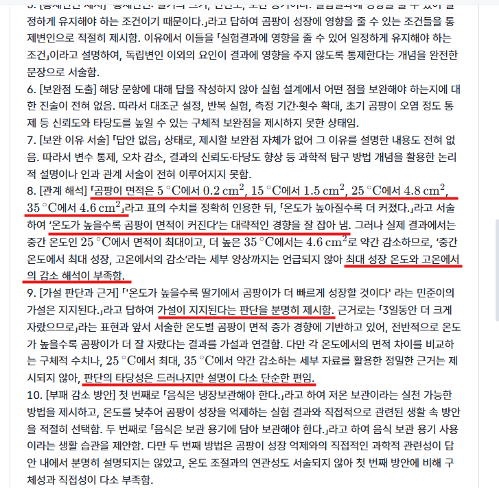

채점기준이 정확도를 정해요
채점기준을 어떻게 쓰느냐가 AI 점수와 선생님 점수가 맞는 정도를 정해요.
AI는 채점기준의 문장을 그대로 적용해요. 그래서 같은 답안이라도 채점기준을 어떻게 쓰느냐에 따라 선생님 점수와 맞는 정도가 크게 달라져요. 실제 채점 검수에서 선생님 점수와 거의 다 맞은 채점기준에는 공통점이 있었어요.
잘 맞는 4가지 쓰기 방식
| 방식 | 이렇게 써요 | 예시 |
|---|---|---|
| 개수를 세게 | "몇 개를 제시했는가"로 점수를 가르기 | 시간적·공간적·사회적·윤리적 관점 중 4개 적용 5점 / 3개 4점 / 2개 이하 2점 |
| 있다·없다로 | 구성 요소가 있는지를 조합해 점수화 | 쟁점 제시 + 자신의 관점 제시 둘 다 5점 / 하나만 4점 / 둘 다 없음 3점 |
| 점수마다 수준을 풀어서 | 각 점수에 "무엇을 했고 무엇이 부족한지"를 구체적으로 | 10점 = 같은 극·다른 극을 구분하고 힘의 방향을 서술함 / 8점 = 구분은 했으나 힘의 방향 서술이 없음 / 6점 = … |
| 정답·키워드를 적어서 | 정답이나 핵심 키워드를 적고, 그 외는 오답 처리한다고 명시 | 불교: 집착과 무지 / 자비 · 도가: 인위와 분별 / 무위자연 … 다른 개념은 모두 오답 처리 |
- 한 채점 요소에는 한 가지 판단만 두세요. "견해를 제시했는가", "근거를 활용했는가"처럼 쪼갤수록 잘 맞아요. 채점 요소 수가 많을수록 선생님 점수와 더 잘 맞았어요.
- 평가 설계의
AI 채점기준 생성으로 초안을 받은 뒤, 위 방식으로 다듬어 쓰면 편해요.
실물로 보면 이래요
점수마다 수준을 풀어 쓴 채점기준과, 그 기준으로 나온 채점 근거예요.


갈리기 쉬운 3가지
| 이렇게 쓰면 | 왜 갈리나요 | 이렇게 바꿔 보세요 |
|---|---|---|
| "깊이 있게 / 대부분 / 절반 정도"처럼 정도 표현만으로 점수 가르기 | AI는 요소가 "있으면" 위 점수를 주고, 선생님은 "완전히 충족해야" 위 점수를 주는 경우가 많아 경계에서 갈려요. | 정도 표현에 개수·유무를 덧붙여요. "대부분 제시" → "네 구간 중 3개 이상 정답" |
| AI가 알 수 없는 것을 요소로 두기 (수업 태도·참여도, 학생이 스스로 썼는지) | 답안 글만으로는 판단할 수 없어요. AI는 글의 완성도로 대신 판단하고, 선생님은 실제 수업을 보고 판단하니 반드시 달라져요. | 그 요소는 AI 채점 요소에서 빼고 선생님이 직접 점수를 입력해요. |
| 정답값·감점 규칙·부분 정답 배점을 안 적기 | 채점기준에 없는 오류는 AI가 알아채도 감점하지 않아요. 계산값이 정해진 문항(특히 과학)은 정답을 적어 주지 않으면 틀린 값을 맞다고 볼 수 있어요. | 문항별 정답값, 감점 대상 오류 유형, "식이 틀려도 과정이 맞으면 N점" 같은 부분 정답 규칙을 적어요. |
같은 기준을 이렇게 바꾸면 돼요
×이렇게 쓰면 갈려요
수학 · 일차함수 식 구하기
4점 — 네 구간의 식을 대부분 제시함
3점 — 네 구간의 식을 절반 정도 제시함
사회 · 해결 방안 제시
40점 — 구체적이고 실천 가능한 방안을 제시함
30점 — 적절한 방안을 제시함
✓이렇게 쓰면 맞아요
수학 · 일차함수 식 구하기
4점 — 네 구간 중 3개 이상 정답
3점 — 네 구간 중 2개 정답
사회 · 해결 방안 제시
40점 — 개인·사회·정부 중 2개 이상 주체별 방안 + 각 방안의 기대 효과 명시
30점 — 방안 1개 또는 기대 효과 없음
✍️
맞춤법·어법 횟수를 점수에 넣을 때는 한 번 더 확인해 주세요. 손글씨가 잘못 읽히면 그 글자가 학생의 맞춤법 오류로 세어질 수 있어요. 어법을 채점하는 과제는 5장의 인식 결과를 확인하고 채점하거나, 학생이 클리포에 직접 입력해 제출하게 하면 안전해요.
과목별 채점 예시
수학·과학·정보·국어·영어·사회·한문·미술·중국어·초등 10개 과목의 채점 화면과 채점기준을 짝으로 볼 수 있어요.
이 문서가 도움이 되었나요?